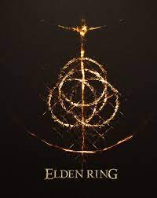

1: Tetris Effect: Connected

Tetris Effect es un videojuego de rompecabezas diseñado por el creador de Rez, Tetsuya Mizuguchi. El videojuego, para PC y VR, busca ofrecer una nueva vuelta de
tuerca al conocido Tetris, jugando con los aspectos visuales y la jugabilidad.
2: Elden Ring

Elden Ring es el nuevo videojuego de FromSoftware, creadores de Dark Souls, Sekiro o Bloodborne. Se trata del nuevo título de acción y rol para un jugador ideado
por Hidetaka Miyazaki.
3: The Witcher 3: Wild Hunt

The Witcher 3 es la tercera entrega de la saga The Witcher desarrollada por CD Projekt para PS4, Xbox One y Pc. Se trata de un videojuego que mezcla elementos de
aventura, acción y rol en un mundo abierto épico basado en la fantasía.
4: God of War: Ragnarok

PeGod of War: Ragnarok para PlayStation 5 es la secuela de God of War, el reinicio y a la vez secuela de los anteriores God of War para consolas PlayStation.
Desarrollado por el prestigioso estudio Sony Santa Monica y con la dirección de Cory Barlog.
5: Demon's Souls Remake

Demons Souls Remake es la puesta al día del clásico videojuego de rol y acción en tercera persona de FromSoftware para PlayStation 5. Desarrollado
por Bluepoint Games se trata de una ambiciosa actualización del título que inició el fenómeno Souls.